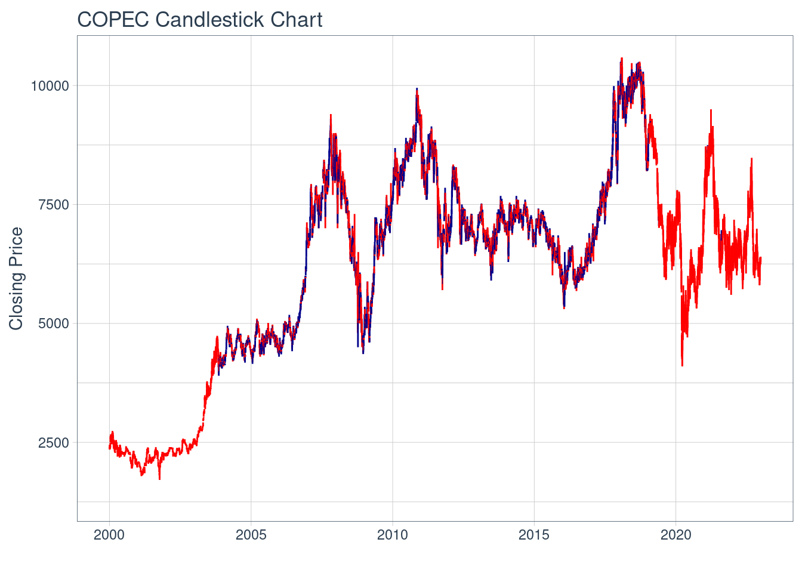

Warning: Removed 1 rows containing missing values (`geom_hline()`).Plantilla Proyecto
Descripción Activo y Contexto (Hito 1)
Fecha de entrega: Jueves 28 de Septiembre 23:59.
Definición
Hoy en día es imposible pensar en el día a día de las personas sin energía, pues hoy casi todos los habitantes del planeta cuentan con dispositivos electrónicos, los cuales se deben conectar a la corriente y se cargan a través de la electricidad, energía renovable, luego nos subimos a nuestro vehículo o al transporte público y nos transportamos a diversos lugares, utilizando petroleo, energía solar o bien a través de electricidad.
Desde los tiempos más remotos la energía a promovido el desarrollo humano, probablemete llegando a convertirse en la rama con mayor innovación del último tiempo. Tanto así que incluso Asif Jamil, Muhammad Akram y Muhammad Bilal se refirieron a esto en su texto “The Role of Energy in Human Development: A Review of the Literature” donde los autores realizan una revisión de la literatura sobre el papel de la energía en el desarrollo humano y terminan por concluir que la energía es un factor clave para el desarrollo humano, ya que tiene un impacto directo en el crecimiento económico, el bienestar social y la sostenibilidad ambiental.
El activo COPEC S.A tiene un valor promedio para el intervalo igual a
NA

Motivación
Tal como se mencionó anteriormente, hoy en día la energía esta viviendo grandes cambios y se ha ido renovando día tras día, pero probablemente la más relevante actualmente es la energía eléctrica, hoy casi todo el transporte público en el país esta implementando su flota con la misma, la gente se mueve a sus trabajos con scooters y bicicletas eléctricas, entre otras alternativas.
Pero esto va incluso más allá, en Europa se aprobó una ley donde para el año 2030 todos los vehículos deben ser eléctricos o sustentables, hoy en día para entrar a Londres solo puedes hacerlo si tu vehículo no utiliza petroleo o diesel. Ha existido un cambio de costumbres y pareciera que todo lleva al cambio en la mentalidad de las personas, donde lo más importante es la sustentabilidad y productos amigables con el medio ambiente.
Sin embargo pensar que la energía eléctrica se queda solamente en el transporte es un error, pues hoy múltiples empresarios y grandes compañías ven una enorme oportunidad de inversión, pues se está generando energía de manera limpia y eficiente, cuidando no solo al medio ambiente, sino también a las personas, pues en el largo plazo al utilizar de esta energía se están reduciendo sus costos.
Contexto
Copec S.A es una compañía chilena de combustibles y que presenta gran interés en el desarrollo de la energía eléctrica, llegando a posicionarse como la empresa más grande de combustibles a nivel nacional y como una de las más grandes en Latinoamérica.
Además es nacionalmente conocido que esta empresa participa en proyectos de generación eléctrica y una fuerte inversión en las energías renovables en general.
Finalmente, es importante analizar el precio de una acción de la compañía, esta se mueve entre los $6772,5 y los $5380,3 y cuenta con una rentabilidad anual positiva, la cual está en 2,33%, pero este mes ha experimentado una baja en su rentabilidad de un 4,3%. A continuación una imagen que da cuenta de la volatilidad de las acciones de la empresa y otras imágenes de utilidad para el entendimiento de esta compañía.
Imagen 1: Volatilidad de acciones Copec
Imagen 2: Montos, precios y relaciones accionarias
Imagen 3: Puntas y rentabilidad
#| warning: false
#| echo: falseAnálisis de Largo Plazo
Caracterización deuda (Aplicación cap. 15)
Copec S.A cotiza en la bolsa de Santiago, y cuenta con una presencia significativa en los mercados financieros y una estructura de inversión diversificada. A continuación, se proporciona una descripción más detallada de sus acciones y accionistas clave:
Acciones Cotizadas:
Si bien sabemos que Copec cotiza en la bolsa de comercio de Santiago, parece interesante señalar que también lo hace en la bolsa de valores de Nueva York, donde no solo emite acciones comunes, sino que también cuenta con acciones de tipo preferente, lo que da cuenta de su diversificación en cuanto a su estructura de capital.
Acciones Preferentes y Bonos Relacionados:
Además de sus acciones comunes, Copec también ha emitido acciones preferentes y bonos relacionados como parte de su estrategia de financiamiento. Sin embargo, se debe considerar que los detalles específicos de estas emisiones pueden variar con el tiempo.
Principales Accionistas:
Copec tiene un grupo de diez principales accionistas que, en conjunto, poseen aproximadamente el 77.65% de la compañía. Entre estos accionistas destacados, ANTARCHILE S.A. es el mayor, con una participación de alrededor del 60.82% en la empresa. Sin embargo, también posee varios accionistas minoritarios, llegando a tener 6342 accionistas y 1.299.853.848 acciones suscritas pagadas. Estos datos reflejan la concentración de propiedad en Copec y pueden influir en las decisiones estratégicas de la compañía.
Imagen 4: Principales accionistas
Caracterización de emisiones históricas
El proceso de emisión de acciones de una empresa, incluyendo Copec, suele seguir un conjunto de pasos fundamentales. A continuación, se describe el proceso básico de emisión de acciones y luego contraste con una caracterización de la colocación específica de Copec:
Proceso Básico de Emisión de Acciones:
1. Determinar la necesidad de capital: Se debe considerar que antes de emitir nuevas acciones, la empresa debe evaluar sus necesidades de capital, pues si bien parece atractivo recibir nuevos ingresos no siempre es necesario, pero claro hay casos que se busque la expansión de negocios, o la reducción de deuda, inversiones en proyectos estratégicos o cualquier otra razón financiera, por lo que es muy importante tener una buena planificación financiera a largo plazo.
2. Decisión sobre el Tipo de Acciones: La empresa debe determinar si emitirá acciones comunes o preferentes, ya que ambas tienen características y derechos diferentes. Las acciones comunes suelen llevar derechos de voto y dividendos, mientras que las preferentes tienen prioridad en el pago de dividendos, pero pueden carecer de derechos de voto.
3. Definición del Volumen y Precio de Emisión: Se decide cuántas nuevas acciones se emitirán y a qué precio se venderán. Este proceso no es “a tontas y a locas” pues se está realizando una valoración de la empresa y en caso de requerirse incluso puede ser necesario la asistencia de analistas financieros y consultores.
4. Aprobación por parte de los Accionistas: Se debe considerar que los accionistas son dueños de una parte de la empresa, por lo que no se puede tomar una decisión sin antes consultarles y determinar lo mejor para la empresa.
5. Registro y Documentación Legal: Como es de esperar, la empresa debe presentar la documentación necesaria ante las autoridades reguladoras y de supervisión del mercado de valores en su jurisdicción. Básicamente lo que se presenta es una oferta oficial a los posibles inversionistas e información detallada.
6. Colocación de las Acciones: Las acciones pueden ser colocadas a través de diferentes métodos, como una oferta pública inicial (IPO, por sus siglas en inglés), una oferta privada o una colocación directa. Lo anterior dependerá netamente de las decisiones y metas de la empresa, además de las regulaciones locales.
7. Cierre de la Emisión: Una vez que se ha alcanzado el volumen de emisión deseado y se han recibido los fondos correspondientes, se cierra la emisión de acciones.
Caracterización de la Colocación de Acciones de Copec:
Copec ha emitido acciones en el mercado chileno y en el mercado internacional. En su caso, la colocación de acciones ha involucrado tanto ofertas públicas como privadas:
1. Ofertas Públicas: Tal como se mencionó anteriormente, Copec transa en la bolsa, esto permite que inversionistas puedan adquirir acciones de la empresa en el mercado abierto.
2. Ofertas Privadas: Como es de esperar, además de las ofertas públicas, Copec también puede llevar a cabo ofertas privadas, las cuales generalmente están dirigidas a inversores institucionales o selectos. Estas ofertas generalmente son utilizadas para recaudar capital de manera más discreta, lo cual muchas veces es buscado por las compañías.
3. Cumplimiento Normativo: Como toda empresa, Copec está sujeta a las regulaciones y requerimientos. En este caso puntual, la empresa debe responder ante la Superintendencia de Valores y Seguros (SVS) de Chile en el ámbito nacional y en las regulaciones de la SEC (Comisión de Valores y Bolsa) de Estados Unidos, para sus operaciones en el mercado internacional.
En resumen, Copec utiliza una combinación de ofertas públicas y privadas para emitir acciones en los mercados chileno e internacional. Estos métodos permiten a la empresa acceder a una variedad de inversores y adaptarse a sus necesidades de financiamiento. Cabe destacar que la emisión de acciones es un proceso complejo y sujeto a regulaciones específicas en cada jurisdicción.
Relación con activos derivados
Un activo derivado relevante podría ser un contrato de futuros de energía eléctrica. A continuación una descripción del contrato de futuros de energía eléctrica, datos sobre su evolución y por qué es importante para la parte de energía de Copec:
Contrato de Futuros de Energía Eléctrica:
- Descripción: Como en todo contrato, es un acuerdo entre dos partes para comprar o vender la cantidad específica de un bien a un precio determinado, en este caso el bien vendría siendo la energía eléctrica.
- Evolución Histórica: Como es de esperar y como todas las energías, la energía eléctrica presenta fluctuaciones a lo largo del tiempo. Estas pueden deberse diversos factores, tales como la oferta y la demanda de energía, o bien la disponibilidad de fuentes de energía renovable, políticas gubernamentales, entre otros.
- Importancia para Copec: Como es sabido, Copec presenta grandes inversiones y proyectos asociados a la energía eléctrica, un contrato de futuros de energía eléctrica le permitiría tener un “escudo” en caso de grandes fluctuaciones futuras de este bien. Por supuesto esto es un riesgo, porque así como puede subir el precio, puede surgir una nueva tecnología y reducir el costo de la misma, por lo que se debe analizar correctamente antes de tomar una decisión.
Procedimiento de Valoración de un Derivado de Energía Eléctrica:
El procedimiento de valoración de un contrato de futuros de energía eléctrica implica determinar su precio teórico en un momento dado. Esto se puede hacer utilizando los siguientes pasos:
1. Recopilación de Datos: Tal como lo dice su nombre, en este paso lo que se hace es reunir los datos relevantes del documento.
2. Modelo de Valoración: Culminado lo anterior, se emplea un modelo de valoración adecuado para calcular el precio teórico del contrato de futuros de energía eléctrica. Pues tal como se mencionó anteriormente, el precio puede subir o bajar, por lo que hay que realizar una correcta valorización.
3. Factores Externos: En este tercer paso lo importante es considerar factores externos que podrían influir en el precio de la energía eléctrica, como las condiciones climáticas, políticas gubernamentales y desarrollos en el mercado energético.
4. Cálculo del Valor Teórico: Una vez realizados todos los pasos anteriores solo queda calcular el valor teórico.
Este procedimiento permite a Copec y otras empresas en el sector energético evaluar el valor de sus derivados relacionados con la energía eléctrica y tomar decisiones informadas sobre la gestión de riesgos y la planificación financiera.
Reporte grupal
Fue entragado por Piero Vergara.